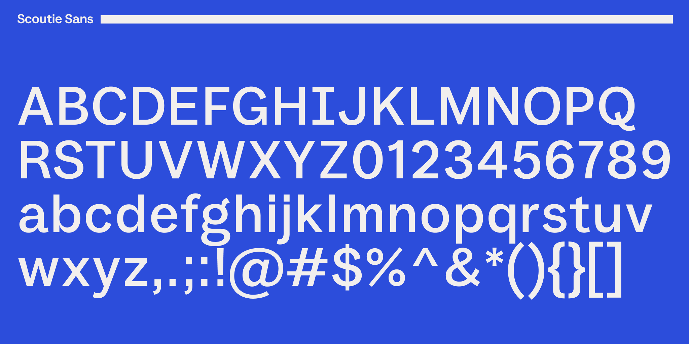
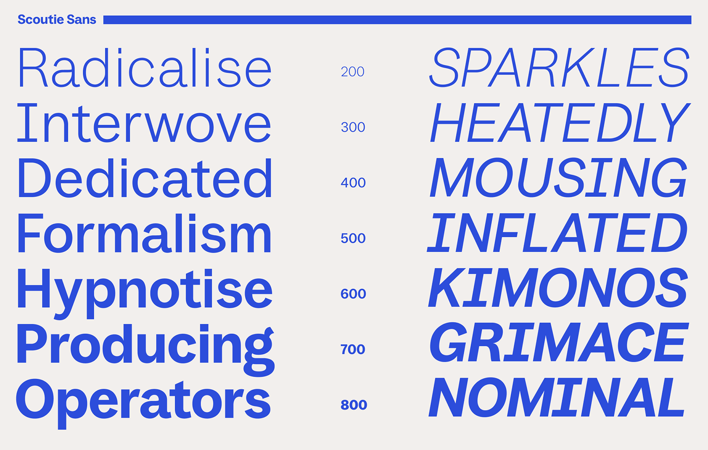
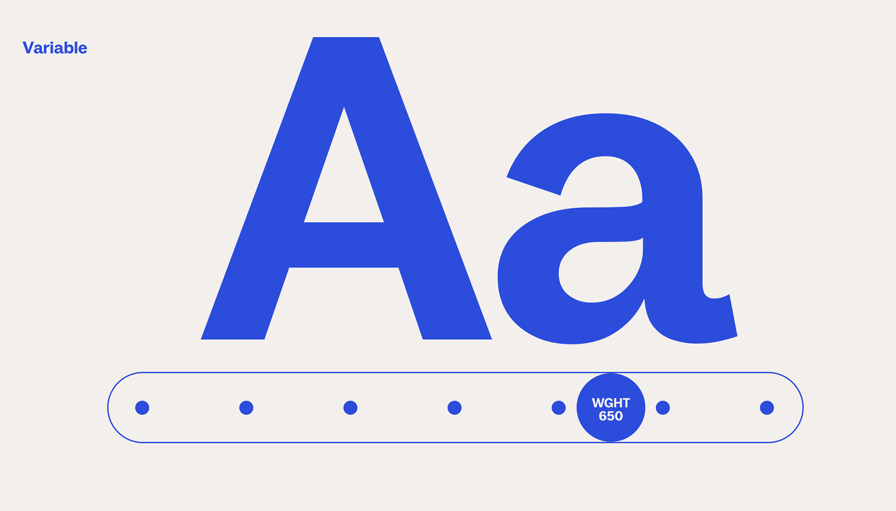
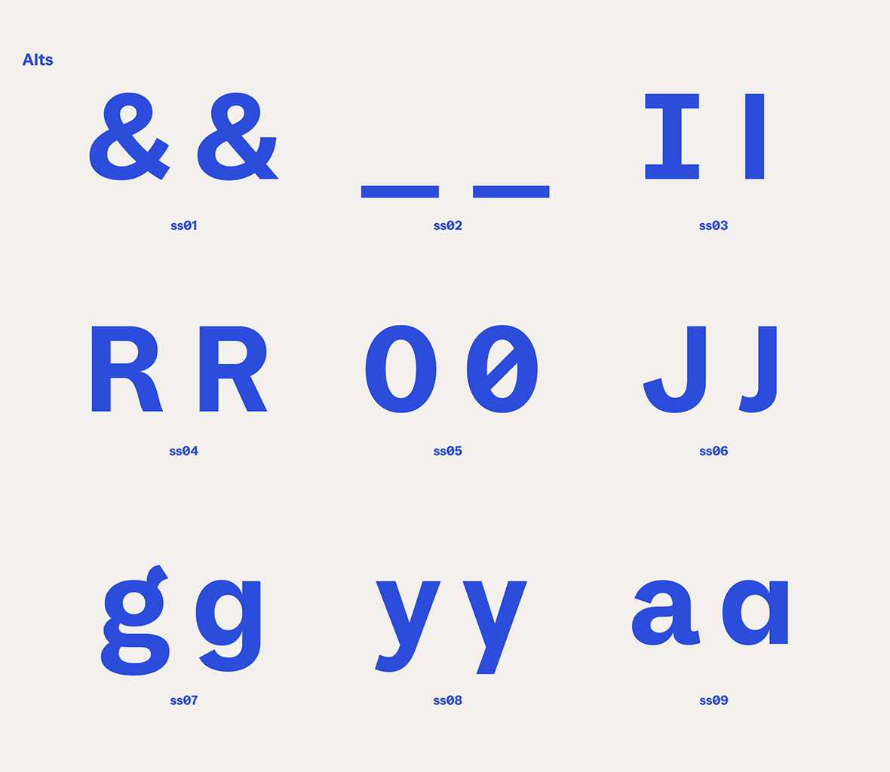

Scoutie Sans is a variable sans-serif typeface designed by Ty Finck for the customer service platform Help Scout. It was created to serve dual roles within the Help Scout brand: a compact, highly legible workhorse for dense UI environments, and a typeface with enough personality to hold its own at display sizes in marketing contexts. The result sits at the intersection of a utility grotesque and a display sans — functional without being anonymous.
The family spans a weight range from ExtraLight to ExtraBold (200-800), with matching italics, offered as a variable font. A set of stylistic alternates gives designers control over characters with strong personality: a single-storey a and g, a straight-leg R, a slashed zero, a crossbar-free I, and others.
Scoutie Sans supports a broad Latin character set covering Western, Central, and Eastern European languages, as well as a range of African Latin orthographies.
To contribute, see github.com/sursly/scoutie.



